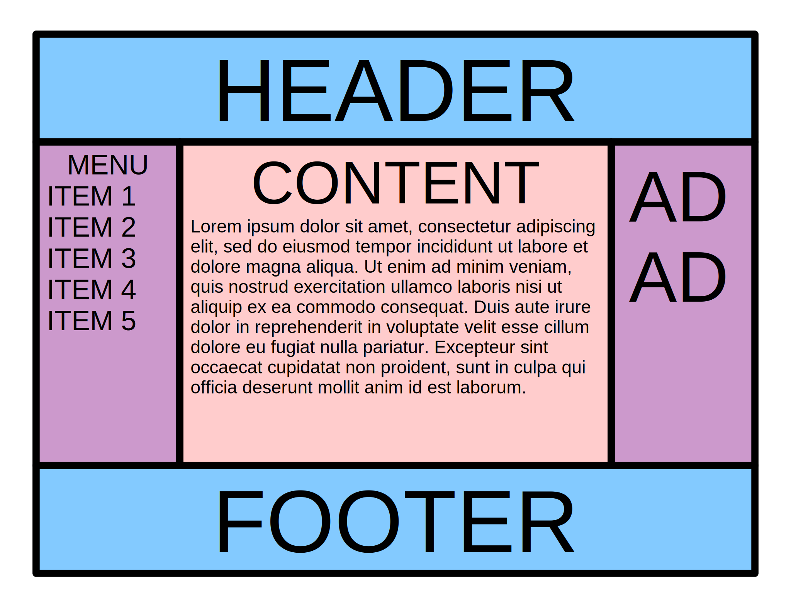
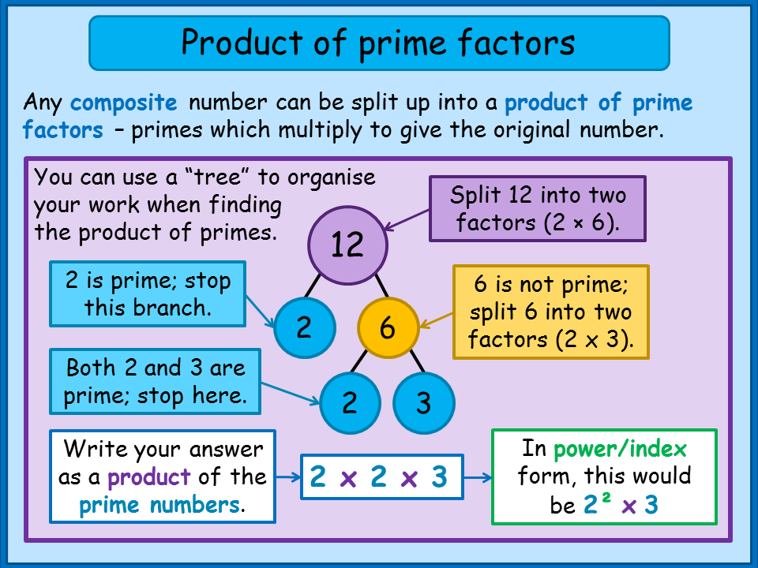
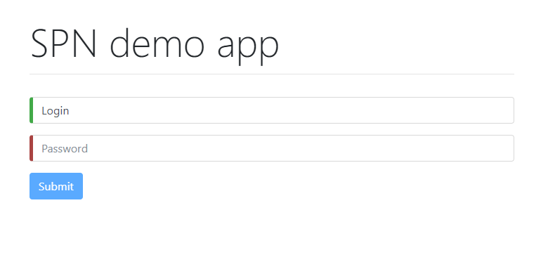

var event = {
type: ["Presentation", "Live coding"],
topic: "Front-end not only for .NET developers",
speaker: "Marcin Rudzki (front-end wizard)"
};

Chrome DevTools
Best way for debugging frontend issues
What IDE or text editor should I choose?

Recommended extensions / plugins
- Emmet — the essential toolkit for web-developers
- Atom-live-server or Node.js http-server
-
Atom-beautify
or
Ctrl+K,Ctrl+Din Visual Studio - AtomLinter / CSSLint / ESLint
- A Color Picker for Atom
Why quality of HTML code is important
Clean HTML code leads to clean CSS code. Clean CSS code leads to clean JavaScript code.

Holy Grail Layout

/* Work on layout */
#spn-academy2 .css-master-class {
position: absolute;
right: 100%;
}

Tiles Layout
Styling agenda
CSS framework
Login page

/**
* SPN Academy #3
* @author Marcin Rudzki
*/
(function $uper(name) {
return name + " is super!";
})("jQuery"); // IIFE

What is $ in JavaScript?
let $ = 5; ++$; // ?
$ = (a, b) => a + b; typeof $; // ?
$(5, 10); // ?

TODO app in jQuery
// SPN Academy #4
document.querySelectorAll(".JavaScript");

describe('spnAcademy.getTopicOf(number)', () => {
it('returns "TDD" for #5', function() {
expect(spnAcademy.getTopicOf(5)).toBe("TDD");
}); // Test-driven development
});Why TDD?
“Unit tests should be written just before the production code that makes them pass. If you write tests after the production code, then you may find the production code to be hard to test.” – Robert C. Martin
Red, Green, Refactor

Set up tools for TDD
NodeJS
Jasmine + spec reporter
Jasmine is a behavior-driven development framework for testing JavaScript code
Insect, Spider, Kraken
Kata #2 – Prime factors
Check ingredients
- node -v
- npm -v
- npm install --global jasmine
- jasmine init
- npm i jasmine-spec-reporter
- add spec/helpers/reporter.js
- jasmine (to run tests)
- class and module pattern in JavaScript
- introduction to Angular(4) & TypeScript
ECMAScript 5 class equivalent
var Castle = function(name) {
this.name = name;
this.build = function() {
console.log(this.name)
}
};
var instance1 = new Castle("Winterfell");
var instance2 = new Castle("Harrenhal");
instance1.build(); // Winterfell
instance2.build(); // Harrenhal
ECMAScript 2015 class
class Castle {
constructor(name) {
this.name = name;
}
build() {
console.log(this.name)
}
}
let instance1 = new Castle("Winterfell");
let instance2 = new Castle("Harrenhal");
instance1.build(); // Winterfell
instance2.build(); // HarrenhalThe Module Pattern
“In JavaScript, the Module pattern is used to further emulate the concept of classes in such a way that we're able to include both public/private methods and variables inside a single object, thus shielding particular parts from the global scope.”
— Addy Osmani
The Module Pattern in ES5
var nameOfModule = ( function(module) {
module.method1 = function() {
console.log("method1 can use " + method2());
}
function method2() {
return 'private method2';
}
return module;
} (nameOfModule || {}) );
nameOfModule.method1(); //"method1 can use private method2"
nameOfModule.method2(); // TypeError
method2(); //TypeError private method2 isn't available hereECMAScript 2015 modules
MDN:javascript/reference/statements/importNote: This feature is only beginning to be implemented in browsers natively at this time. It is implemented in many transpilers, such as the Traceur Compiler, Babel, Rollup, and Webpack.
ES6 modules example
// --nameOfModule.js--
function method2() {
return 'private method2';
}
export function method1() {
console.log("method1 can use " + method2());
}
// --main.js--
import { method1 } from 'nameOfModule';
method1(); //"method1 can use private method2"
method2(); //TypeError private method2 isn't available here
Marcin Rudzki
Why use Angular over plain JS or jQuery?
- Rapid development & Code generation (CLI with code and test generators)
- Code organization (forced clean folders based structure with encapsulated components)
- Dynamic content in HTML templates (*ngIf, nfFor, {{string interpolation}}, custom directives)
- Free and Cross platform (works on Windows, Linux, OS X, iOS, Android etc.) and cross browser
- Unit & e2e testing ready
Running tests
-
Running unit tests
Run ng test to execute the unit tests via Karma -
Running end-to-end tests
Run ng e2e to execute the end-to-end tests via Protractor
Angular CLI allows you to focus on Angular code instead of workflow tasks.
CLI is a great tool for small, big and very big projects!
Type this in cmd: npm config get prefix
and copy&paste the path that you get into your computer environment variables => user variables => path => edit
Click OK and reopen cmd window.
What are we going to build
How an Angular App gets
Loaded and Started
An open-source programming language developed and maintained by Microsoft. It is a strict syntactical superset of JavaScript, and adds optional static typing to the language. Anders Hejlsberg, lead architect of C# has worked on its development.
A Class Decorator is declared just before a class declaration. The class decorator is applied to the constructor of the class and can be used to observe, modify, or replace a class definition.
@Component({
selector: 'app-root',
templateUrl: './app.component.html',
styleUrls: ['./app.component.css']
})
export class AppComponent {
title = 'app';
}How to add Bootstrap CSS properly
npm install bootstrap@4.0.0-beta --save
//.angular-cli.json:
"styles": [
"../node_modules/bootstrap/dist/css/bootstrap.css"
]
How to create custom Component automatically
ng generate component name-of-your-component
// ng g c header --spec false

How to create custom Component manually
Two-way data binding – bananas in a box
<input class="form-control" [(ngModel)]="someValue">
import { FormsModule } from '@angular/forms'
imports: [ BrowserModule, FormsModule ] //app.module.ts